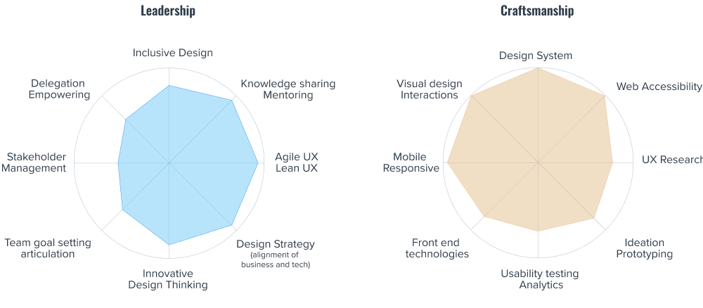

Where I am

What I do
- Craft and build Design System
- Write design guidelines
- Coach designers and developers use the Design System.
- Write accessibility guidelines
- Coach designers and developers Web Accessibility WCAG 2.1
-
Play a Design Ops role focus on tools, processes, design handoff,
and operations.
- Facilitate design ideation workshops
- Create wireframes and hi-fi mockups
- Reviews on design and give advice
- Code reviews PR on Github
- Test A11Y on Assistive Technologies
- Share knowledge by presentations